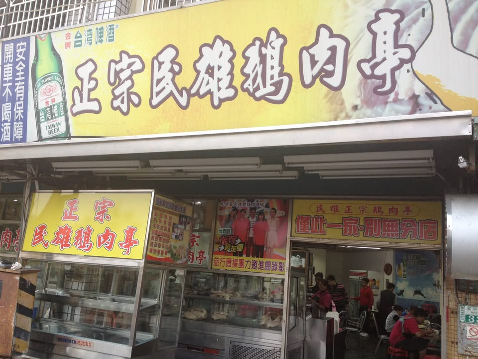
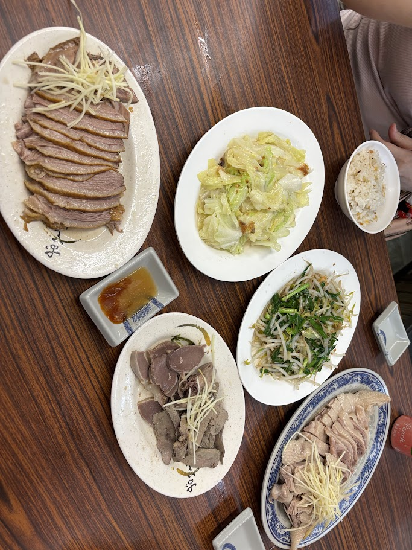
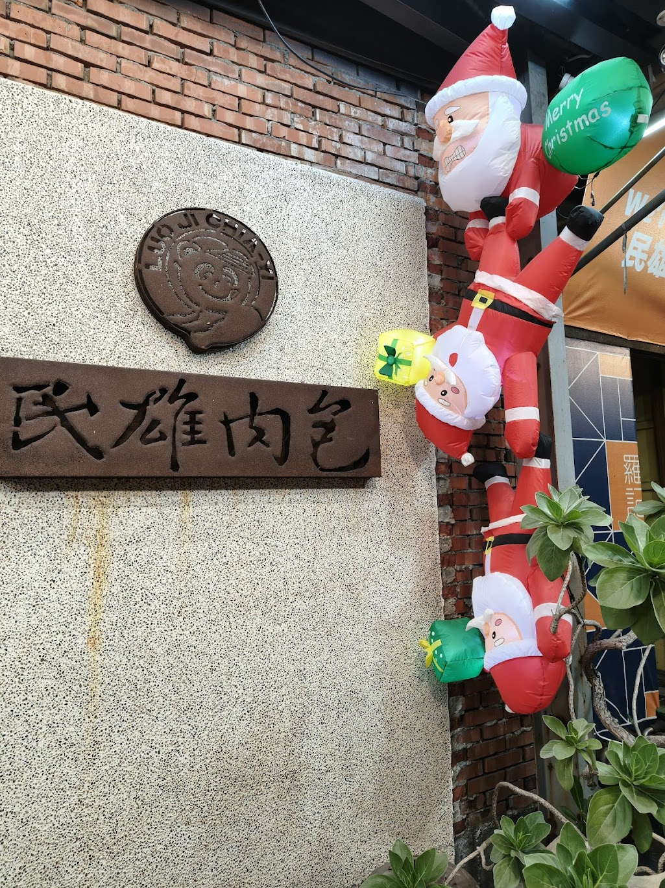
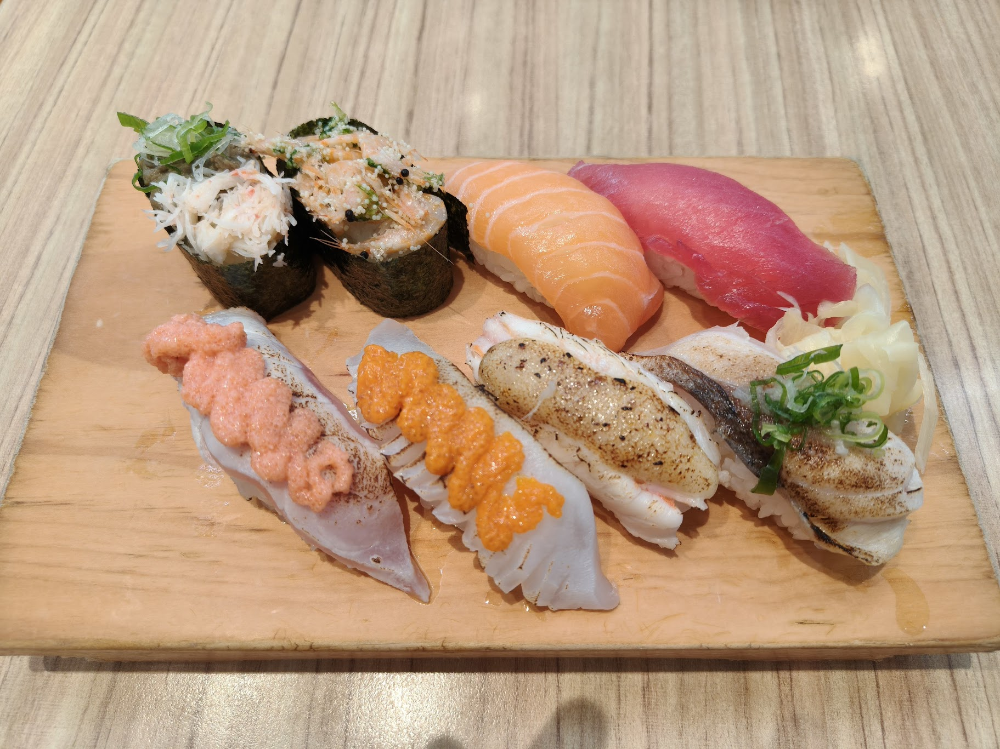
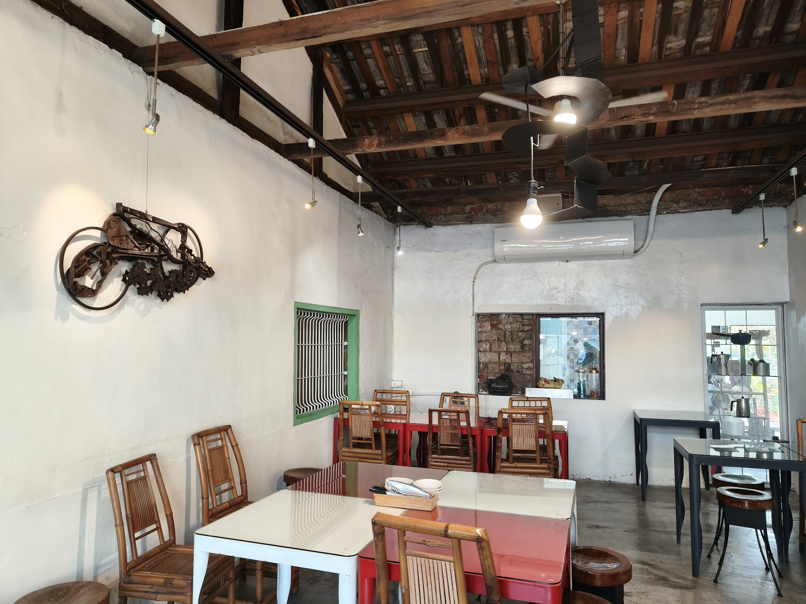
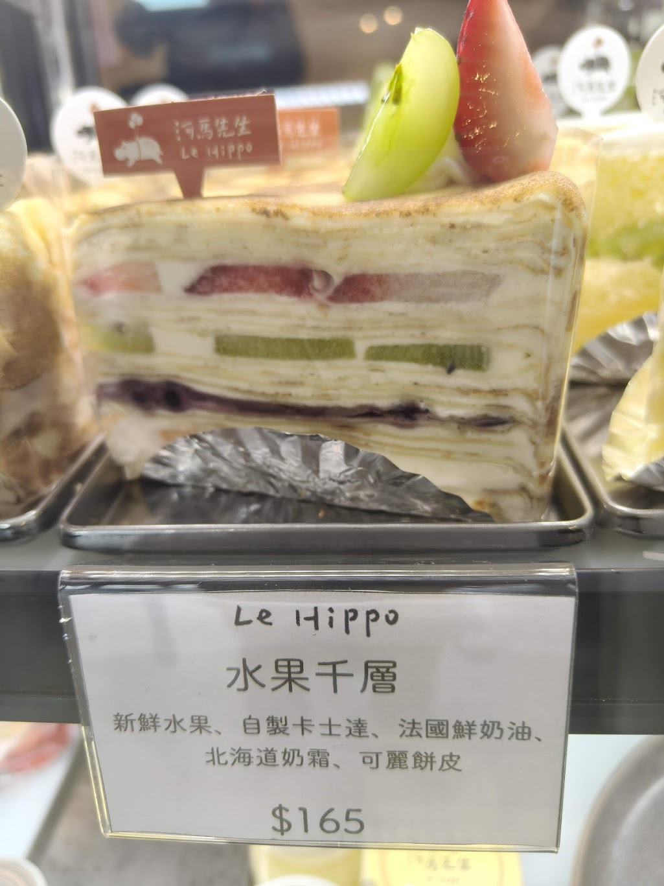

民雄在地美食指南
民雄以鵝肉一條街、24 小時肉包老店與各式特色小吃聞名。
無論是中正大學學生課後覓食，還是首次造訪民雄的旅客，
這裡匯集民雄各類店家深度介紹，幫你快速找到想吃的。
民雄美食文章

正宗民雄鵝肉亭
民雄鵝肉一條街最具代表性的老字號排隊名店，鵝肉肉質軟嫩多汁，設有大停車場，是學生與旅客的鵝肉首選。
閱讀全文

民雄大慶鵝肉
民雄鵝肉街人氣老店，以新鮮鵝肉料理著稱，湯頭清甜鮮美，適合全家聚餐，是鵝肉一條街不可錯過的好味道。
閱讀全文

羅記民雄肉包
民雄 24 小時營業的名產老店，肉包外皮鬆軟、餡料豐富扎實，是來民雄必帶的伴手禮，也是中正大學學生深夜宵夜首選。
閱讀全文

BB SUGAR 逼逼堂
民雄特色碳烤丹麥甜甜圈，外皮酥脆焦香、內層鬆軟甜蜜，是民雄甜點愛好者必訪的手工烘焙店。
閱讀全文

花亭壽司專賣
民雄高 CP 值日式壽司店，料多實在、食材新鮮，是中正大學學生想換換口味時的日式食堂首選，價格親民不手軟。
閱讀全文

渡對 Do Right
民雄鐵道旁的老宅文青餐廳，融合歷史建築與當代料理，氛圍獨特，是學生聚會、拍照打卡的熱門地點。
閱讀全文

河馬先生甜點烘焙坊
民雄平價精緻手工甜點烘焙坊，蛋糕、塔類與各式甜點種類豐富，用料實在，是民雄學生解壓下午茶的好去處。
閱讀全文